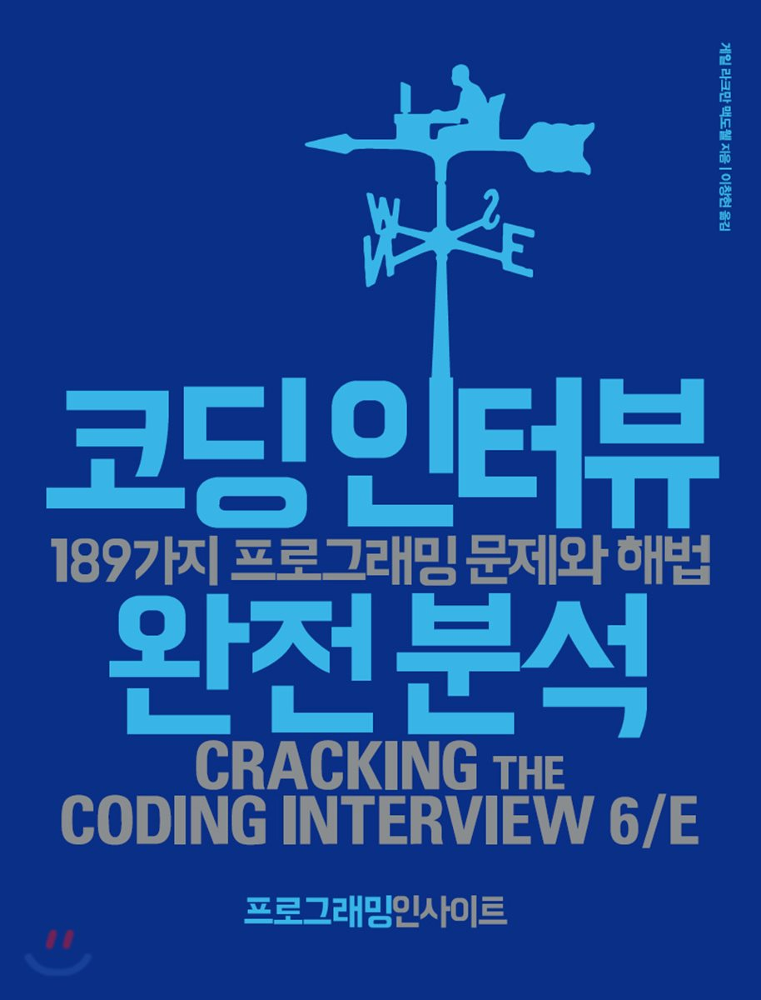

코딩인터뷰 간단한 소개
마이크로소프트, 그리고 애플, 구글에서 일한 경험이 있는 소프트웨어 엔지니어 게일 라크만 맥도웰의 『코딩 인터뷰 완전 분석』. 대형 IT 업체에서 면접이 이루어지는 과정을 살펴볼 수 있다. 성공적으로 면접을 보기 위해 가져야 하는 최소한의 지식에 대해서도 배우게 된다. 150가지 프로그래밍 문제와 해법 등을 수록하고 있다. 도전적이고 진취적으로 문제를 대하는 것이 가장 중요함을 거듭 강조한다.
게일 라크만 맥도웰의 『코딩 인터뷰 완전 분석』
이 책을 읽으며 초급 개발을 하는사람들이라면 누구나 가슴이뛰게하는 내용이 많이 담겨있다.
개발직군으로 들어오고나서부터 많은 멘탈에 도움이 되고있는 책이다. 면접준비부터 어떤마인드 사고를 가져야하는지.. 또 앞선 사례(실리콘밸리 같은..) 우수한 사례도 볼 수가 있기때문에 굉장히 높은수준의 도움이 되는것같다. 이 책을 읽으며 앞으로 많은것을 나누어보려고한다.
오늘 글을쓰는것은 이전에 읽었던 초입부분 면접준비와 과정 또 사례들을 함께 나누어보려고한다.
#적절한 경험쌓기
이력서가 탄탄하지 않으면 면접까지 가기 힘들고 훌륭한 경험이 없으면 탄탄한 이력서를 만들 수 없다. 따라서 첫 단추는 훌륭한 경험을 쌓는것이다.
아마 우리의 상태는 크게 2가지 일것이다.
- 학생(취업준비생)
- 또는 직장인
학생(취업준비생)이라면?
– 만약 지금 학생(취업준비생)이라면 다음과 같은 방법이 있다고 한다.
1) 큰 규모의 프로젝트 수업을 들으라.
대규모 코딩 프로젝트를 위한 과목을 알아보아야 한다. 즉 취업을 하기전에 다소 실전경험을 쌓을수 있는 일이 있으면 해야한다는 것이다. 지금 글을쓰고있는 나도 프로젝트 단위의 수업을 듣고 취업에 취업전선에 들어왔다. 실무위주의 프로젝트를 진행하며 준비하는것이 좋다.
2) 인턴자리를 알아보라.
특히 저학년이라면 인턴의 기회를 꼭잡아서 경험을 쌓는것도 좋은 방법이다. 최고의 테크 회사를 가도 좋지만, 스타트업에서 하는것도 좋은 기회가 될수있으니 기회가 있다면 하는것이 좋다.
3) 뭔가를 하라.
나는 이것이 누구든지 가장 효율적인 방법이라고 생각한다.
개인시간을 할애해서 프로젝트를 하거나 오픈소스 프로젝트에 참여하는 것이다. 1번이랑 겹치는 부분도 어느정도 있다. 결국에는 스스로 프로젝트를 하든 무엇이든간에 자신이 할수있는 무언가를 하여 기술적 능력을 키우고 실제 경험을 쌓는것 곧 코딩을 하는것이 중요하다고 말하고있는 것이다.
이직을 생각한다면?
– 만약 이직을 생각하고 있는 사람이라면, 아래와 같은 방법을 저자가 추천하고있다.
1) 코딩을 많이 할 수 있는 업무를 하라
회사를 옮기지 않고서도 코딩 기회를 좀 더 많이 갖고싶다는 이야기는 할 수 있다. 프로젝트를 고를 때는 가능하면 대형 프로젝트로 고르고, 관련된 기술을 많이 사용해 볼 수 있도록 하며, 최종적으로는 이력서의 한두 꼭지로 넣을 수 있도록 해야하는 것이다.
2) 저녁과 주말을 활용하라
남는 시간이 있다면 모바일 앱을 만들들, 웹 앱을 만들든, 아니면 데스크톱 소프트웨어를 만들든 하라. 이런 프로젝트를 진행해보면 새 기술에 대한 경험을 쌓을 수 있을 뿐 아니라 기술적으로 뒤쳐지지 않을 수 있다. 이러한 프로젝트 경험은 반드시 이력서에 적어야 한다!
이력서에 재미삼아 만들어 본 것이 있는 개발자만큼 면접관에게 깊은 이상을 심어주는 사람도 없다.
#탄탄한 이력서 작성하기
실리콘밸리(미국)에서는 경력이 10년 미만인경우 이력서를 한 페이지로 만들도록 권장한다.
만약 그보다 더 경력이 된다면 1.5~2페이지로 만들 수 있다.
이력서가 길어진다면 다시한번 생각해봐야 한다. 이력서는 짧을수록 인상에 남는다.
근거있는 이유는?
구인담당자는 이력서를 볼 때에 지정된 시간 이상을 쓰지 않는다. (기껏해야 10초) 인상적인 항복만 적혀있다면 반드시 볼 것이다.
아무리 경력이 많더라도 이력서에 우선순위를 매긴다면 지정된 페이지안에 이력서를 잘 작성할 수가 있다.
1) 고용이력
이력서에 과거의 직함들을 전부 나열할 필요는 없다.
관련된 고용 이력들만 나열해야 한다. 그중에서도 나를 더욱 인상적으로 만들어줄 수 있는 것들만 말이다!
인상적으로 쓰려면?
- 각 직무별로, 무엇을 성취했는지 다음과 같은 방식으로 말해보자.
“Y를 구현해서 X를 성취했고, 그 결과로 Z를 이루었다.” 사례를 보자.
1
2
3
4
5
6
7
8 ex1)
"분산 캐시를 구현해서 오브젝트 렌더링 시간을 75% 줄였고,
그 결과 로그인 시간을 10% 절감할 수 있었다."
ex2)
"windiff에 기반한 새로운 비교 알고리즘을 구현한 결과,
평균 비교 정확도를 1.12에서 1.5로 개선했다."
모든 일을 이런식으로 쓰지는 못하겠지만 원칙은 같다.
무엇을 했는지, 어떻게 했는지, 그리고 결과는 어떠했는지를 적으라!
2) 프로젝트
이력서에 프로젝트 칸을 채울 수 있다면 보다 실부 경험있는 지원자처럼 보일 수 있다.
- 특히 학생 또는 갓 졸업한 사람일 수록 말이다.
프로젝트 칸에는 가장 중요하게 한 프로젝트 2-4개정도 나열하는 것이 좋다.
무슨 프로젝트였고, 언어와 기술을 사용했는지 적으라.
개인프로젝트였는지? 팀을꾸려 진행한건지? 대학수업과 연계된 프로젝트였는지? 등
세부사항을 적고싶을수도 있을 것이다.
어떤 프로젝트를 적어야 할까?
사실 무엇을 적든 큰 문제가 되지 않는다. 어떤 면접관은 오픈 소스 프로젝트를 좋아하는 반면, 다른 면접관은 독립된 프로젝트를 선호한다.
모바일 앱, 웹 앱, 거의 모든 것을 만들어 볼 수 있다.
가장 중요한 것은 내가 무엇인가를 만든다는 사실이다.
3) 프로그래밍 언어
프로그래밍 언어를 적을때에는 무엇을 적어야 할지에 대한 고민을 덜어줄 수 도 있다.
질문?
-> 경험한 모든 언어를 작성할 것인가?
-> 능숙하게 다루는 몇개만 남길 것인가?
사용해봤던 언어 전부를 적는 것은 위험할 수 있다.
-> 왜냐하면 많은 면접관들이 이력서에 적혀있는 어떤 것이든 면접에서 물어볼 수 있다고 생각하기 때문이다.
적당히 쓸줄 아는 언어를 적었다가 면접관이 예상치 못한 질문을 할때 대비할 수가 없기 때문이다.
필자는 이에 대한 대안을 말해주고 있다.
그에 대한 대안은 가능하면 사용했던 모든 언어를 적되, 언어에 대한 숙련도로 함께 적자.
예를 들면 아래와 같다.
프로그래밍 언어: 자바(전문가), C++(능숙), 자바스크립트(경험있음)
어떤 표현이든지 내가 기령을 효과적으로 보여줄수 있는 단어를 함께 사용하는것이 좋다.
또, 내가 한두 가지 언어에만 능숙하다면 다양한 언어로 애플리케이션을 만들어보는것을 추천한다. 가능하면 진심으로 언어에 대한 도전을 꾸준히 하는것도 좋다.
파이썬, 루비, 자바스크립트 무리의 언어들은 다소 비슷한 면이 있다. 파이썬, C++,자바와 같이 다른면이 있는 언어들을 배운다면 더 좋을 것이다.
#정리
나도 개발입문 경력이 얼마 되지않기 때문에 이 책을 통해서 많은것을 깨닫고 공부를 어떻게 해 나가야하는지 가이드를 잘해주고있다.
책을 좀 더 읽어봐야 하겠지만 이 책대로 면접준비를 하면서 코딩문제를 보며 다양한 사고를 가지고 준비하는것이 도움이 많이 될 것 같다.
단순하게 암기하는 것이 아니라, 문제 원인을 파악하고 그 문제를 해결하려는 시야가 많이 열려야 할 것이다.
이 책은 그런것들에 대해서 많이 이야기 하고 있고 실제로 앞으로 접하게되는 페이지에는 189가지의 면접 코딩문제를 가지고 다양한 사고와 함께 해결방안을 모색해줄 것이다.
곧 알고리즘과 그 뒷 이야기들을 포스팅하겠습니다.